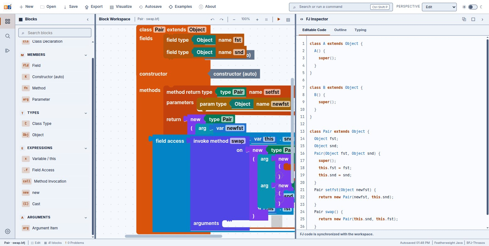
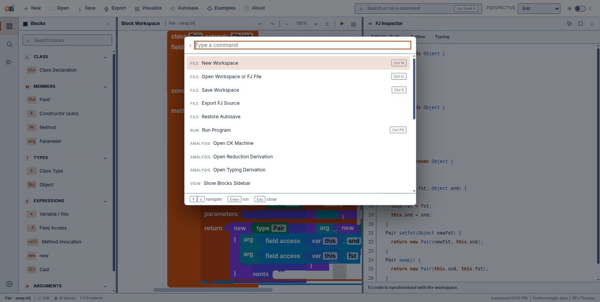

A proof tree you can drag and drop
BFJ takes the smallest object-oriented core calculus there is and gives it a block editor, a natural-deduction proof tree, and two independently-implemented semantics that are checked against each other on every run — so a definition that usually lives on paper becomes something you can step through.
What BFJ is
BFJ is a Blockly encoding of Featherweight Java (FJ), the minimal core calculus
for class-based object typing introduced by Igarashi, Pierce and Wadler. Classes, fields, one
canonical constructor, methods, new, field access, method invocation, casts —
and deliberately nothing else. Every block in the toolbox corresponds to exactly one production
in FJ's grammar, and the workbench keeps a full typing derivation and two operational semantics
open alongside whatever you build.

Four things distinguish it from a plain block editor:
- A grammar-aware renderer with real geometry. BFJ-Thrasos gives each FJ non-terminal a distinct connector shape, not just a colour, so a wrong connection looks wrong before Blockly's own check mechanism rejects it.
- A constructor you never build.
fj_ctoris synthesized automatically from a class's fields, mirroring FJ's own rule that the constructor is fully determined byfields(C)— which is what keeps a proved bijection between block trees and ASTs intact. - A visible proof tree. The Typing tab renders a genuine natural-deduction derivation for anything you build, premise by clickable premise, over a checker that is tolerant of half-finished work.
- Two semantics, cross-checked. A substitution-based small-step reduction is the definition of record; a CK abstract machine is a derived, separately-implemented artifact proven to agree with it step for step.
BFJ is built alongside B-MJ at
L-Workshop — architecturally modeled on it, same workbench
shell, same inspector-and-dock layout — but it shares no code with it. The two answer
different questions. B-MJ is a small but usable general-purpose OO language you can write
real programs in: int/boolean/String, arrays,
println, assignment, a heap. BFJ is the stripped-down “proof-theory”
core of Java — just enough syntax to study how object typing and dynamic dispatch work,
with every step of typing and evaluation shown as an explicit derivation. If you are looking
for int, String, arrays, println or assignment, that
is B-MJ, not here.
The workbench
A VS Code–style shell: an activity rail selects what the sidebar shows, the sidebar and dock are resizable, collapsible and individually maximisable, and the whole arrangement is a perspective you can save or restore.
| Region | What lives there | Toggle |
|---|---|---|
| Activity rail | Blocks · Search Blocks · Run and Analysis · Settings | — |
| Sidebar | The searchable, collapsible-category toolbox | Ctrl + Shift + F |
| Block Workspace | The blocks, with zoom and ▶ Run | — |
| FJ Inspector | Editable Code, Outline, Typing | — |
| Bottom dock | Problems, Output, CK Machine, Reduction | Ctrl + J |
| Status bar | File name, block count, problem count, autosave | — |
The Inspector's Editable Code tab is a syntax-highlighted, two-way FJ/Java source view; Outline is a clickable structural tree of classes, members and expressions; Typing holds the proof tree, covered in chapter 04. The bottom dock's CK Machine and Reduction tabs are the two semantics views from chapter 05.
Perspectives
Set from the status bar, from the command palette, or by rearranging panels by hand.
| Perspective | Arranged for |
|---|---|
| Edit | Building a program: blocks, code, a focused workspace |
| Debug | The CK Machine and Reduction steppers |
| Type Analysis | The Typing derivation and Problems tab |
| Presentation | A maximised block workspace, for teaching |
| Custom | What you get as soon as you adjust a panel by hand |
Both live in Settings on the activity rail. The autosave interval is adjustable from 2 to 20 minutes; the status bar shows a running timestamp once the first autosave has landed, and a Restore Autosave action brings a backup back after a closed tab or a crash.
Command palette
Ctrl + Shift + P (or F1, or the search box in the top bar) opens a fuzzy-searchable list of every command, grouped by category.

The full list, grouped by File/Run/Analysis/View/
Workspace/Perspective/Preferences, is in
the reference chapter.
Files and autosave
Workspaces save as .bfj JSON files. FJ source can be exported or opened separately, so
a program can leave BFJ as ordinary Java-shaped text and come back as blocks.
- Save Ctrl + S writes a
.bfjworkspace. - Open Ctrl + O loads a
.bfjworkspace back, or imports a.fj/.txtfile through the text→blocks parser. - Export writes the generated
.fjsource. - Autosave keeps a rolling local backup at the interval you set, under a localStorage key, with a status-bar timestamp.
Built-in examples
Nine programs. There is no built-in list or pair type in FJ — Pair below is a
researcher-defined, two-field Object-typed record class, exactly the kind of encoding FJ programs
need for anything beyond bare objects.
| Example | Shows |
|---|---|
| Pair · setfst | An object-pair record type; an R-Invk/R-Field chain producing a new object |
| Field access | A single R-Field step — the smallest complete program |
| Method call | A Wrapper class; R-Invk then R-Field |
| Pair · swap | R-Invk then two R-Field steps |
| Booleans · dispatch | Church-encoded Bool/True/False —
dynamic dispatch across a hierarchy |
| Peano · pred | Nat/Zero/Succ — Peano-encoded
naturals |
| Upcast (Object) | T-UCast — a trivially-safe upcast to Object |
| Downcast (A) B<:A | T-DCast — a downcast that succeeds because the dynamic class really is a subtype |
| Stupid cast | T-SCast — type-checks with a warning, always fails at runtime |
If you only run one, make it Pair · swap: it is short enough to read in full, and it is the example traced end to end in the Semantics chapter. If you want to see the type checker's warning path rather than its happy path, load Stupid cast instead — covered in Types and Semantics.